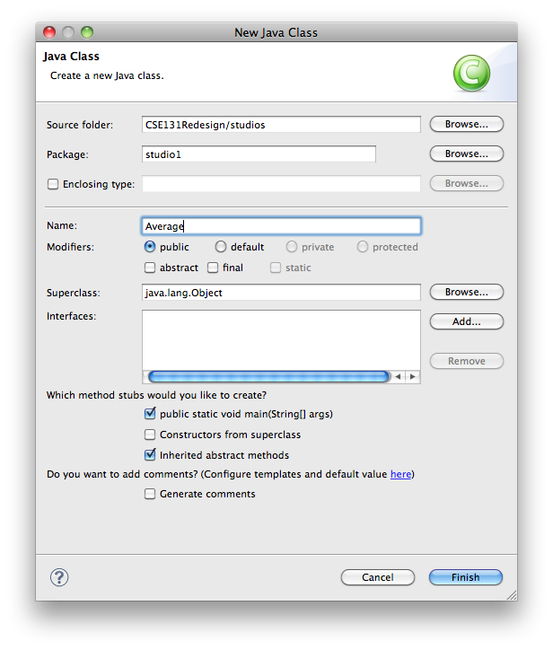

Studio 1: Getting Started
Read this before starting:
Studio Sessions Overview:
- We gather as a community in studio session to learn from each other.
Our community includes:
- Instructor
- TAs
- Students
- Our community is egalitarian in terms of learning: all of us will have questions and all of us should try to provide answers.
- The idea is to challenge each other and to share what we discover.
- You are free (downright encouraged) to collaborate in this session:
- Primarily within your small group of 2-4 people
- Secondarily with any group in the class
- As much as you like with the instructor and TAs
- In studio, the instructor’s mission is to observe, interact, and work with groups.
- How you think, work, and arrive at a solution is more important than getting the right answer. Thus, the instructor and TAs will observe you throughout the exercise and offer constructive feedback.
- The help you receive may be incomplete at any given time, so that you can work through more of the solution on your own. Do not hesitate to ask for more help.
- In studio, the student’s mission is to acquire new knowledge and skills by
the collaborative solving of problems.
- You are not graded on whether you get wrong or right answers on this exercise.
- You are graded on your level of participation in studio.
- Participation is defined as:
- Asking questions, at any level, of any person in the studio
- Discussing possible solutions with people in the studio
- Helping somebody in the studio solve a problem
- Presenting or demonstrating your solution to people in the studio
- Documenting your group’s experiences in studio
-
Please eliminate external stimuli (cell phones, IM, Facebook) during studio. Please devote yourself to learning, mastering, and extending the material for the session.
The results of your studio session are to be reported and documented in a file that you save in your workspace. You are to commit that report prior to leaving studio. In the descriptions of the studio exercises, verbs like report and document are indications of activities you should summarize and discuss in your report.
In your groups, take turns documenting results, looking over shoulders, and staffing the keyboard.
It is unacceptable to copy anything without understanding it. At any point, the TA or instructor can point to something you’ve done and ask you why it works, or change it and ask what would happen with the modification.
- To receive credit for a studio, your team must cleared by a TA or the instructor.
- Be careful how you use the web. You are required to develop solutions as a group by thinking not by finding solutions that have been thought out by others. You must be able to explain anything that you have done.
Warmup
- First, form a group:
- If you are at a table with a large, wall-mounted screens, a group of 3-4 people is fine.
- If you are seated at a table without a large screen, a group of 2 people is better.
- All but one member of your group should have this web page open so you can follow along and see the instructions as you work.
- Plan to have one computer at which your team does its work. Initially, one of you will be in charge of typing at that computer.
- Throughout the studio, you should trade who is in charge of the keyboard.
Procedure
- You will complete a series of simple Java programs, and run each program to ensure it performs its task correctly.
- The files for this program are in the
studio1package of the repository you loaded. -
To run a program, right- (control-) click on the file’s name, choose
Run As -> Java Application. The program will then launch and prompt you for the inputs it needs. Try this now on theHelloclass. When it asks you how you are feeling, enter whatever comes to mind.The tools we use are replete with buttons and menus to make programming easier. One such button near the top of your eclipse window is a green circle containing a white triangle:

Clicking on this button will run the program again. Try running the program using the button. Isn’t that more fun?
Some of the following exercises are adapted from Princeton University’s COS 126 course, based on our text by Sedgewick and Wayne.
For each of the following exercises, find the file in your studio repository and complete it to do the assigned task.
HiOne
Say hello to the name supplied as input to this program.
Sample output:
Hi Doug. How are you?(assumingDougwas supplied as input)
Feel free to end the output with punctuation that indicates the level of enthusiasm associated with your greeting.
HiFour
Expand your hospitality to the four names supplied to this program.
Sample output:
Greetings Cormen, Leiserson, Rivest, and Stein.Be sure to put in proper punctuation to separate the names.
Ordered
Define a boolean variable isOrdered whose value is
true if the three values are either in strictly ascending
order (x < y < z) or in strictly descending order
(x > y > z), and false otherwise. Print out the variable
isOrdered using System.out.println(isOrdered).
Some of you may already know some Java. We have not yet covered the
ifstatement. You must use what has been taught so far (simple expressions and assignment) to accomplish this task.
Average
Complete this code so that it prints the average of its two integer inputs.
Sample output:
Average of 5 and 6 is 5.5.Note that the output is specified as a
double, because the average of two integers is not necessarily an integer.
OK, for this one, you are on your own. We are not giving you code for this, but will instruct you how to create your own Java file from scratch:
-
Right- (control-) click on the
studio1package, selectNew…Class. -
Type the name
Averageand check the box that indicates you want to createpublic static void main(String[] args):
- Click
Finishand your new class shows up in the editor window. -
At the top of the
mainmethod, you need to insert theArgsProcessorcode to accept two integers:n1andn2.Refer to other studio code to see how this is done. It is likely that when you type in the code, eclipse will flag your code with an error, because it doesn’t know (yet) about
ArgsProcessor.You can get eclipse to solve its own problem by mousing over the error, and using the first suggestion that pops up, namely to include
ArgsProcessorfrom thecse131package. Sometimes eclipse is über silly and won’t tell you about that fix until you have saved your file. So save it.Try to use meaningful messages to prompt for values. The units for the values will be interpreted as grams. For example, if
3is specified forcarbs, that means that this run of your program is for food that has 3 grams of carbohydrates.A not so nice prompt:
int n1 = ap.nextInt("Yo, sup?");And a nice prompt:
int n1 = ap.nextInt("The first of two integers to be averaged?");Run your program and makes sure it prompts you correctly for its values and ask a TA to check your work at this point.
- Finish the class so it prints out the appropriate message.
Creative Exercise
Ice Cream
As a group, brainstorm the best data type to represent the following situations:
Often, there is no right or wrong answer. Be prepared to defend your choices.
- The number of times you have been to Ted Drewes
- Whether you like vanilla frozen custard or not
- The number of people you can take in your car
- The price of a small cup of vanilla frozen custard
- The name of your favorite special offering from Ted Drewes
- The address of the Ted Drewes that is closest to campus
- The percentage of calories in vanilla frozen custard that come from fat
- The probability that you will see a friend at Ted Drewes when you go there
Submitting your work:
To submit your work, contact the instructor or a TA. They will walk you through the submission process. Be prepared to show them the work that you have done and answer their questions about it!